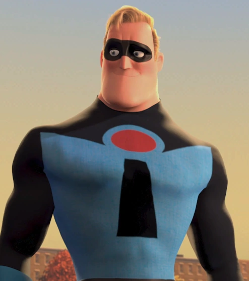
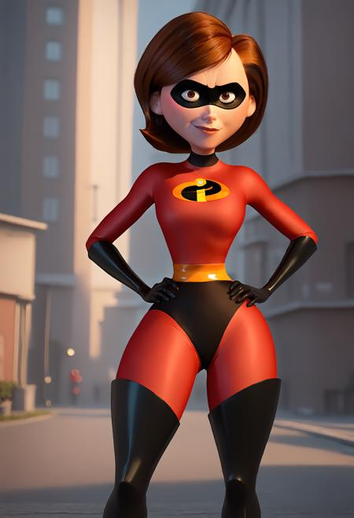
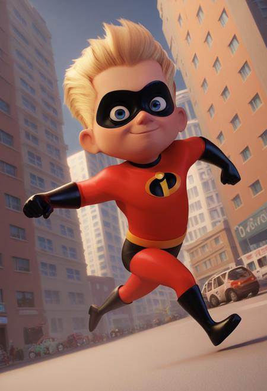
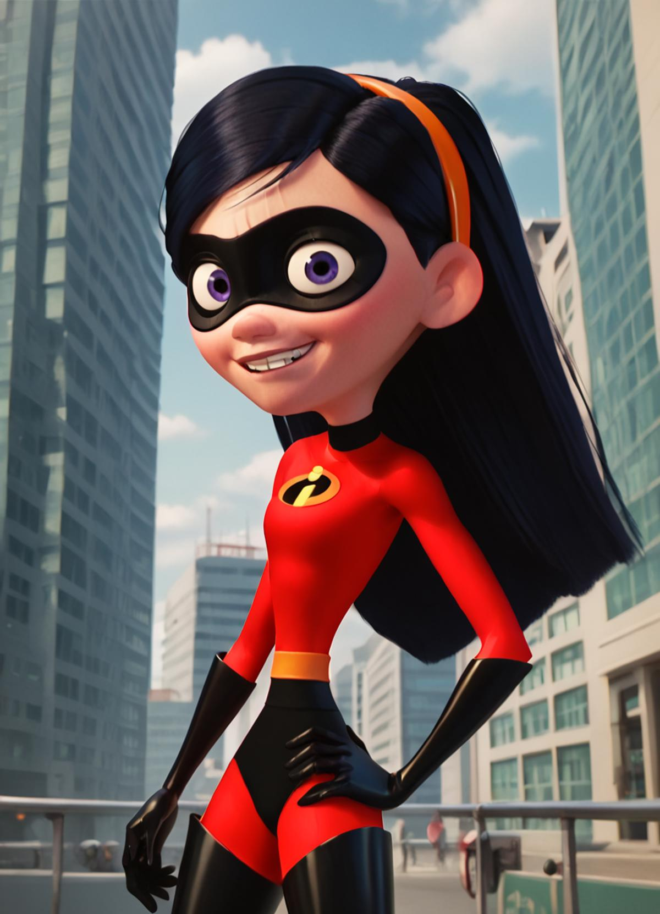
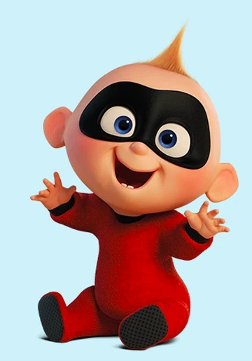

Bob Parr (Mr. Incredible)
Bob Parr, once known as Mr. Incredible, is the strong and confident head of the Parr family. Even though he's getting older, he's still incredibly strong and tough. He misses his superhero days but tries hard to keep things normal for his family.

Helen Parr (Elastigirl)
Helen Parr, also known as Elastigirl, is the flexible and adaptable mom of the Parr family. She's an amazing superhero who can stretch her body into all sorts of shapes. As a mother, she juggles her superhero responsibilities while raising their kids, always offering emotional support and guidance.

Dash Parr
Dash Parr is a lively and impulsive kid who can run at super speed. He's always looking for excitement and adventure. Even with all his energy, he's a big help to the family, using his speed to save others and tackle tough situations.

Violet Parr
Violet Parr is a shy yet powerful teen who can turn invisible and create force fields. She's getting the hang of her powers and starting to embrace them. Though she tends to be cautious, she's a strong and protective part of the family.

Jack-Jack Parr
Jack-Jack Parr is the youngest and most unpredictable member of the Parr family. He has a bunch of different powers, like controlling fire, teleporting, and super strength, making him quite a handful. His wild and constantly changing abilities often create funny and surprising moments.